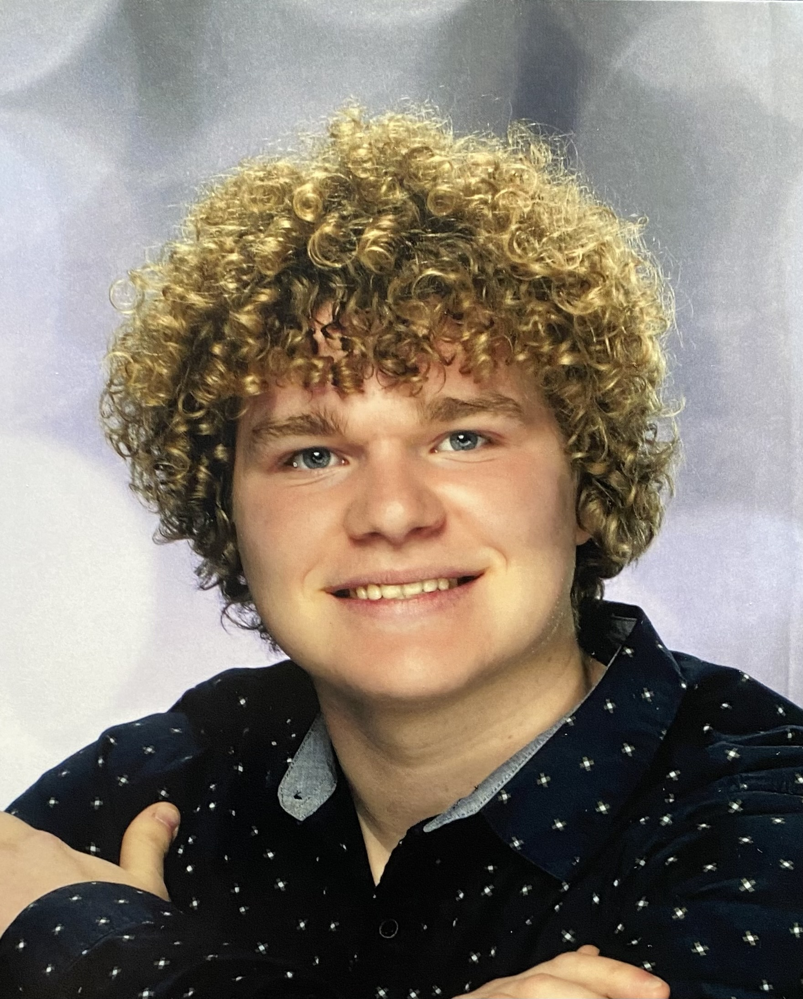

About Me
Game developer in progress, focused on systems, stories, and iteration.
I have always had a passion for crafting experiences and worldbuilding. I love developing stories into my games, even when they are not front and centre. Programming has always been one of my favourite hobbies. Each line of code brings a new challenge to face and problem to solve. My current focus is learning the multiplayer aspects of game development so I can create more engaging and social gaming experiences.

Xander Puhlmann
I am passionate about all things game development and I am working hard to start my career. My focus is gameplay programming, Unity, Unreal Engine, VR, and building complete systems through iteration. I am interested in also learning the art side of development so that I can create more immersive and visually appealing games.
Education
NAIT Digital Media and IT
Concentration: Video Game Programming
NAIT Game Development - Starting in the Fall
Animation and Game Design
Skills
Career Direction
Gameplay programming, systems design, multiplayer foundations, and polished indie game development.